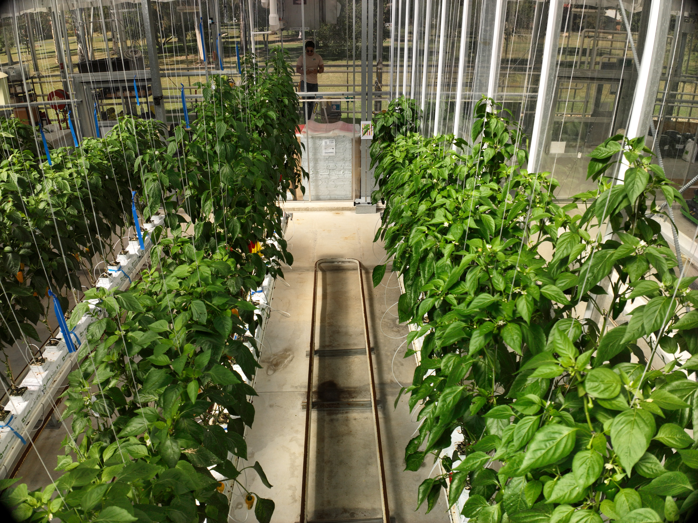

Plant health. A new perspective.
From the glasshouse
to the leaf.
A closer look at plants, from above. Drone2Leaf brings drone imaging and plant health research together in protected cropping environments.
Watch the flightThe flight film
Drone2Leaf in the glasshouse.
01 / DRONE TO LEAF
A whole glasshouse.
One leaf at a time.
An illustration of our research goal: from a drone flying among plants to individual leaves and signs of disease.
02 / FIRST LOOK
The view from above.
One raw image from the glasshouse. A canopy of plants, and a closer look to come.

Original drone imageA closer look is coming
Initial results in the next update.
03 / THE PROJECT
A shared view
of plant health.
Our team has completed a major round of indoor drone data collection at Western Sydney University.
Flying in a glasshouse means navigating confined spaces and capturing plants from different heights and angles. The flight film offers a glimpse of that work.
APPN · ANU Node
Drone2Leaf
Collaborators
- Dr. Tao Hu
- Dr. Dat Pham
- Mr. Scott Allchin
- Dr. Supriyo Shafkat Ahmed
- Dr. Richard Poire
- Prof. Mark Tjoelker
- Prof. Danielle Way
ANU TechLauncher students
PlantDIs project
- Hanxiao Ma
- Yubin Zhan
- Zongjing Han
- Mukul Sharma
Project support
The project is also supported by the Central Data Team and by the TechLauncher program at ANU through the PlantDIs project.
Led through the Australian Plant Phenomics Network (APPN) ANU Node, in collaboration with the WSU APPN Node, with support from the APPN SIF program.